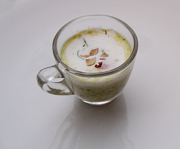

Lecker Kressesüppchen
5 von 6Wenig Kresse für die Garnitur beiseite legen. Ca. 80 g Kresse fein schneiden. Eine Schalotte und 8 Radieschen fein hacken. In einer Chromstahlpfanne das Öl erhitzen. Schalotte und Radieschen gut andünsten. Kresse beifügen und mitdünsten. Mit Wein, 5 dl Bouillon und etwas Rahm ablöschen, pürieren. Abschmecken.
Die Haselnüsse in feine Scheiben schneiden. In einer beschichteten Bratpfanne ohne Fettzugabe leicht rösten. Erkalten lassen. Restliche Radieschen in sehr feine Scheiben schneiden. Den restlichen Rahm steif schlagen und mit den Haselnussscheiben vermischen. Haselnüsse in feine Scheiben schneiden. In einer beschichteten Bratpfanne ohne Fettzugabe leicht rösten. Erkalten lassen. Restliche Radieschen in sehr feine Scheiben schneiden. Den restlichen Rahm steif schlagen und mit den Haselnussscheiben vermischen. Sofort in vorgewärmten Tellern anrichten. Mit Radieschen, einigen Kresseblättchen und etwas Rahm servieren.
